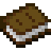
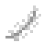

Zeer zeldzaam: 12 guhboeken om te lezen op lessenaars, de Bibliothecaris, een kwis en een geheime kamer
The guh libraryDe guhbibliotheek
The very rare guh library (Guhbibliotheek) in the Guhmension has three floors under a glass dome with guh ears. In the reading room every guh book lies open on a lectern: right-click to read it straight away, no borrowing and no waiting. Of every book you may take one copy home, just once (the Take a copy button). If you lose it, the Bibliothecaris behind the desk sells spare copies for book vouchers. He also runs the Guhkwis: questions about the books you've read. Your first right answer to each question earns a book voucher. His shop is the only place that sells the scholar's outfit for your guh: little scholar's glasses, the bookworm cardigan and the scholar's beret. There's also a guh-shaped reading armchair. The twelfth book, the Secret Guh Book, isn't on any lectern. Look for a bookcase with a pink book sticking out... VAHOEG!
De zeer zeldzame guhbibliotheek in de Guhmensie heeft drie verdiepingen onder een glazen koepel met guhoren. In de leeszaal ligt elk guhboek open op een lessenaar: rechtsklik en je leest het meteen, zonder lenen en zonder wachten. Van elk boek mag je één exemplaar meenemen, maar één keer (knop Exemplaar meenemen). Ben je het kwijt? Dan verkoopt de Bibliothecaris achter de balie reserve-exemplaren voor boekenbonnen. Hij doet ook de Guhkwis: vragen over de boeken die je gelezen hebt. Je eerste goede antwoord op elke vraag levert een boekenbon op. Alleen in zijn winkeltje koop je het geleerdenpakje voor je guh: het geleerdenbrilletje, het boekenwurmvest en de geleerdenbaret. Er is ook een guhvormige leesfauteuil. Het twaalfde boek, het Geheime Guhboek, ligt op geen enkele lessenaar. Zoek een boekenkast waar een roze boek uitsteekt... VAHOEG!


LootBuit
| ItemVoorwerp | CountAantal | ChanceKans |
|---|---|---|
| 2–8 | oftenvaak | |
 Boek | 1–3 | oftenvaak |
| 4–12 | oftenvaak | |
 Veer | 1–3 | sometimessoms |
| Inktzak | 1–2 | sometimessoms |
| 1 | sometimessoms | |
| Written book | 1 | 60% |